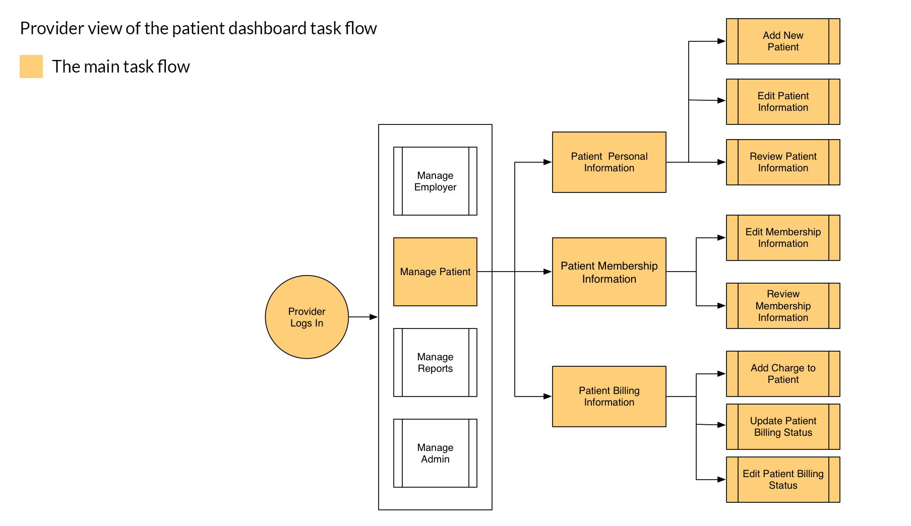
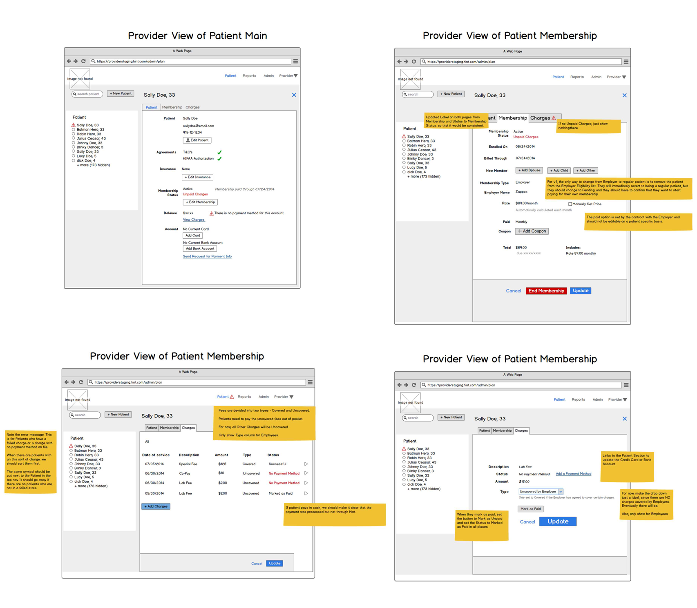
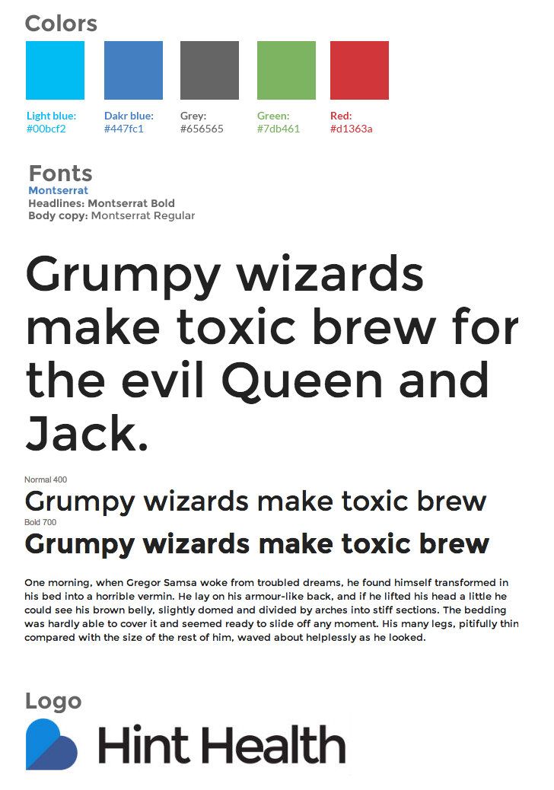
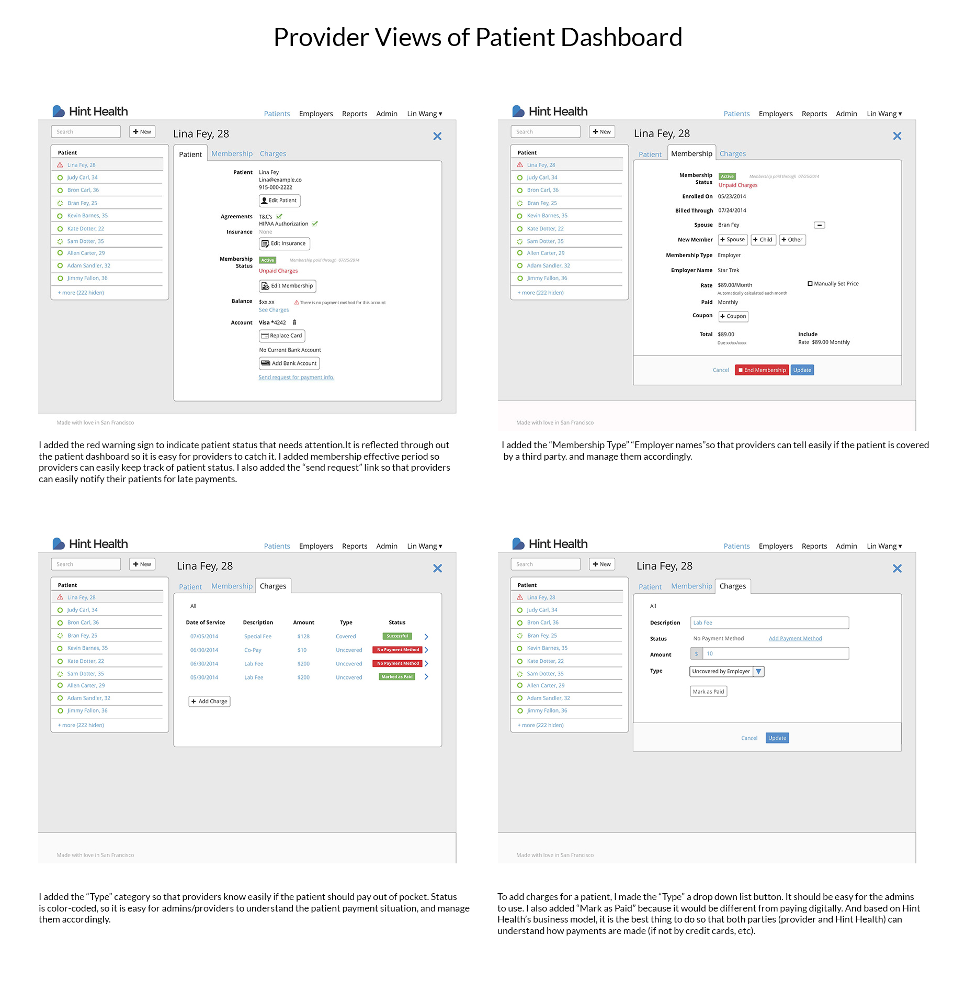

UX + Information Architecture - Hint Health Dashboard
Hint Health is an advanced membership management and billing platform for direct primary healthcare providers(Usually referred to as DPC providers).
Problem
The current DPC providers have problems managing their patients. For example, it is hard for the providers to track patients status - active or inactive, whether or not they are covered by the 3rd party (their employers), etc. It is also hard for the providers to keep track of late payments. Here, I need to solve the problem for the providers, so that they can spend more time with their patients, less time on the admin work.
Project
I researched, ideated, wireframed, and prototyped a patient management dashboard for Hint Health. The dashboard is easy for users to understand and use. Streamlined with Hint’s other services.
My Role
• User Research • Persona • User Stories • User Task Flows
• Interface Design • Prototype
Process
User Research
I studied the DPC models and current practice situations in the States. Through user interviews with the DPC practitioners, I got to understand their current pain points and what they need to provide better services to their patients — less admin work so they the providers can spend more time on the patients, etc.
I took the pain points down on post-its, selected the ones that are most relevant to the feature I’m designing as the picture shown below.

Hint Health Brand
• Deliberate
• Dependable & Responsive
• Transparent
• Transformative
• User-centered
Persona
Based on my user interview results, I developed two personas for the project. They are shown as below.


Epics
DPC providers can view and manage, bill patients easily.
Design Stories
DPC providers can use Hint Health patient management dashboard to: add new patients; view existing patients information; edit patients; bill patients; notify patients; keep track of patients enrollment/payment statuses, etc.
Task Flows

After discussion with Hint Health, the main task flow I'm working with here is simplified as the image shown below.
It helps me focus on what need to be considered for the first version of Hint Health Patient Dashboard.
Wireframes
Based on my task flows and user needs, I developed the wireframes for this feature. This feature is being developed by Hint Health dev team right now. The yellow notes explain the new features I added. They are also for the engineers to reference to.
Mockups
Hint Health uses Bootstrap as their template. Below are some of the style guide specs I used.
This is the final mocks I have for them for this feature. It is the same style that Hint.com follows.
This feature is currently being developed by Hint Health Dev Team. Updates will follow